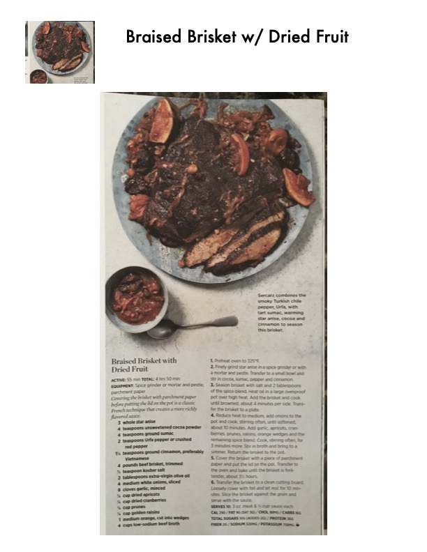

Braised Brisket with Dried Fruit

Original cookbook page 40
Brisket seasoned with a unique spice blend of smoky Urfa chile pepper, tart sumac, warming star anise, cocoa and cinnamon, braised with dried fruits. Uses a classic French technique of covering with parchment paper for richer flavor.
Prep: 55 minutes active • Cook: 4 hours • Total: 4 hours 50 minutes
Ingredients
- 3 whole star anise
- 4 teaspoons unsweetened cocoa powder
- 4 teaspoons ground sumac
- 2 teaspoons Urfa pepper or crushed red pepper
- ¾ teaspoon ground cinnamon, preferably Vietnamese
- 4 pounds beef brisket, trimmed
- 1 tablespoon kosher salt
- 3 tablespoons extra-virgin olive oil
- 4 medium white onions, sliced
- 8 cloves garlic, minced
- ½ cup dried apricots
- ½ cup dried cranberries
- ½ cup prunes
- ½ cup golden raisins
- 1 medium orange, cut into wedges
- 4 cups low-sodium beef broth
Instructions
- Preheat oven to 325°F.
- Finely grind star anise in a spice grinder or with a mortar and pestle. Transfer to a small bowl and stir in cocoa, sumac, pepper and cinnamon.
- Season brisket with salt and 2 tablespoons of the spice blend. Heat oil in a large ovenproof pot over high heat. Add the brisket and cook until browned, about 4 minutes per side. Transfer to a plate.
- Reduce heat to medium, add onions to the pot and cook, stirring often, until softened, about 10 minutes. Add garlic, dried fruits, orange wedges and remaining spice blend. Cook, stirring often, for 3 minutes more.
- Stir in broth and bring to a simmer. Return the brisket to the pot.
- Cover the brisket with parchment paper and put the lid on the pot. Transfer to oven and bake until fork-tender, about 3½ hours.
- Transfer brisket to cutting board. Cover with foil and let rest 10 minutes. Slice against the grain and serve with the sauce.
Recipe #40 from collection